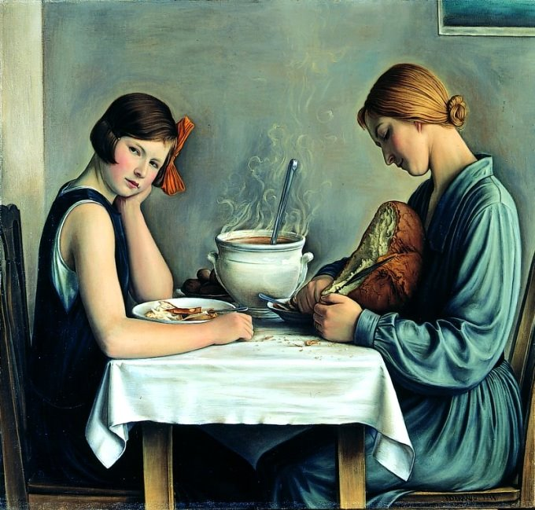
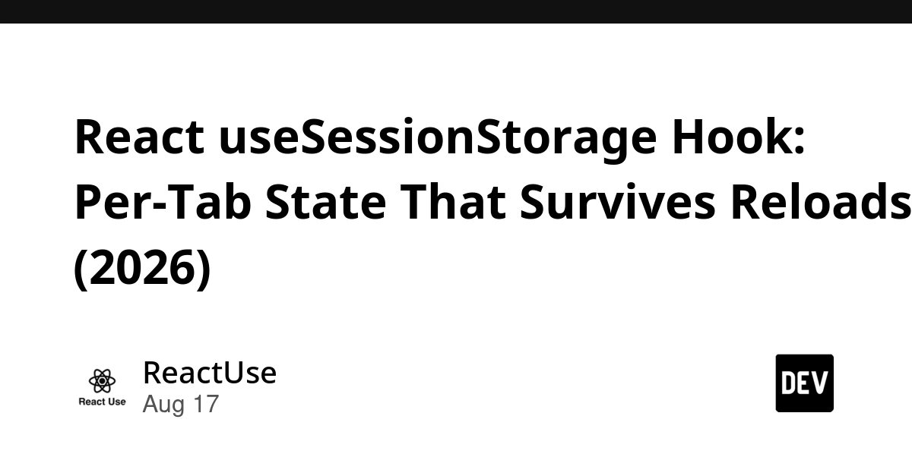
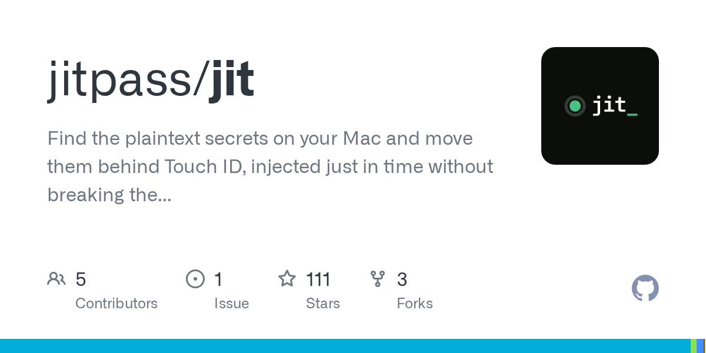
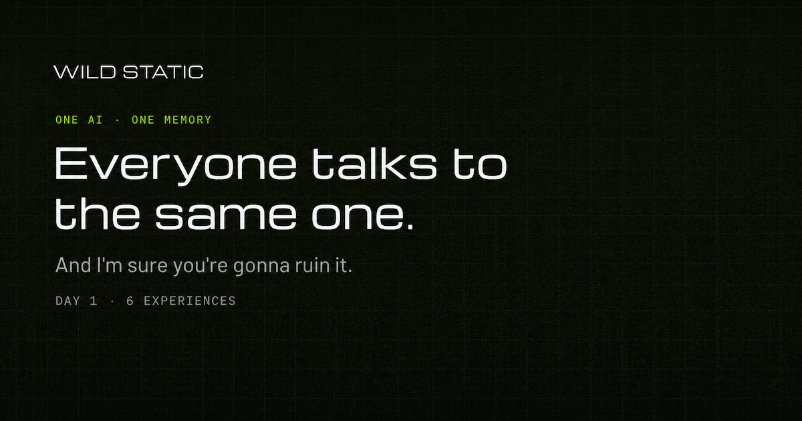
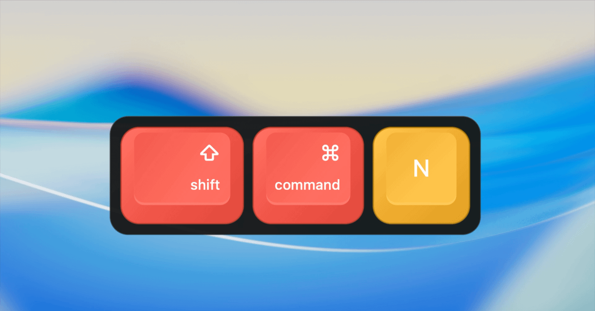
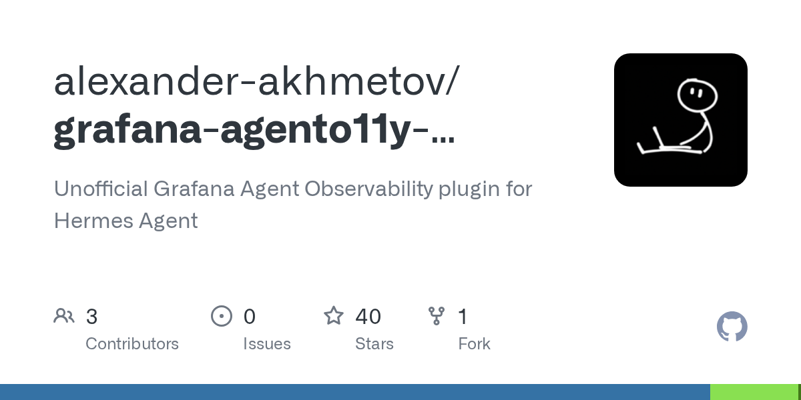

🔥 Top 3 (must read)
AI Coding Without the Vibes
(HN discussion) — An argument for "craft coding" with AI: use coding agents while staying in full control of the design, instead of vibe-coding and hoping the output holds up. It lays out concrete habits for keeping code quality high when a model writes much of the code. As an EM rolling out AI tools, this gives you language and practices to set the bar for how your team should use agents.

React useSessionStorage Hook: Per-Tab State That Survives Reloads
A practical pattern for React state that survives a page reload but stays separate per browser tab, using sessionStorage behind a hook. It starts from a real failure case: a checkout flow that loses the customer's step on reload. Directly useful in your TypeScript/React work — multi-step forms and wizards are exactly where this bites.

Ship It Conversations: Ned Bellavance on DevOps, Terraform, and the Future of Infrastructure as Code
A conversation with Ned Bellavance (Day 2 DevOps podcast) about DevOps beyond the buzzwords, platform engineering, and where AI fits into infrastructure as code. The core claim: tools keep changing, but fundamentals still decide outcomes. Good listen for your DevOps/SRE interest, and useful framing for how much to bet on AI in your infra workflow.
🤖 AI for developers
Qwen 3.8 27B is excellent, but it defaults to wildly overthinking things
Simon Willison's hands-on review of Alibaba's new Apache 2 licensed, vision-capable 27B model. The interesting part for developers: it is a strong model at a size that runs on a good laptop, if you tame its long default reasoning.

MathCode, a mathematical coding agent
(HN discussion) — a coding agent specialized for math-heavy code; a look at where domain-specific agents are heading.
M
Agentic AI vs RAG: They're Not the Same Thing
a clear explainer: RAG answers questions from a knowledge base, an agent takes actions toward a goal. Handy vocabulary when your team or stakeholders mix the two up.

Running three AI models on one local server when your VRAM doesn't cover all of them
a sequential-loading pattern for running Whisper, an embedding model, and an LLM on one box that can only hold one at a time.
👔 Engineering & teams
Covered in Top 3 today: the "craft coding" piece on how teams should adopt AI coding agents, and the Ship It episode on DevOps fundamentals. No other items qualified.
🎯 For me
useSessionStorage hook pattern
Strongest stack hit: the for React multi-step flows (Top 3 #2).
AI Coding Without the Vibes
Strongest EM hit: as input for team norms on agent use (Top 3 #1).
No testing, Playwright, Flutter, or Node.js release news in today's batch.
💡 App ideas & indie builds
Made a mosaic generator for my wife's anniversary, nobody wanted it as a SaaS, then stumbled into the real use case
a photo-mosaic tool that failed as a general SaaS until the builder found the real customer. A good lesson in point form: the product idea and the paying use case are often two different discoveries.
Show HN: Laptop is the last place your secrets are still in plaintext
(discussion) — a tool that removes plaintext API keys and secrets from developer laptops. The problem is real and close to home: every dev machine is full of
.env files.
Show HN: A public AI whose memory is shared across all users
(discussion) — one AI where every user's conversation feeds a single shared memory. Odd as a product, but a thought-provoking design: what breaks, and what becomes possible, when memory is communal?

Make every keystroke visible while you teach, demo, or stream
a keystroke overlay for screencasts and live demos. Small, focused problem with a clear audience (teachers, streamers, anyone recording tutorials) — a nice example of a shippable micro-tool.

Show HN: Grafana agent observability for Hermes Agent
(discussion) — dashboards for watching what an AI agent actually does. Agent observability is a young niche; the "ops tooling for AI agents" space is wide open for side projects.

🎓 Try this
Run Qwen 3.8 27B on your laptop as a local coding helper. It is Apache 2 licensed, sized for a well-specced machine, and Simon Willison's notes tell you the one thing to fix up front: cap its reasoning so it stops overthinking simple prompts.